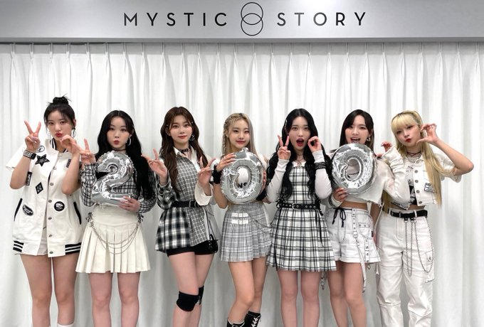
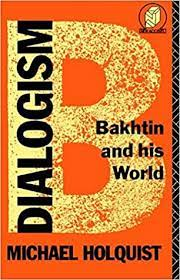
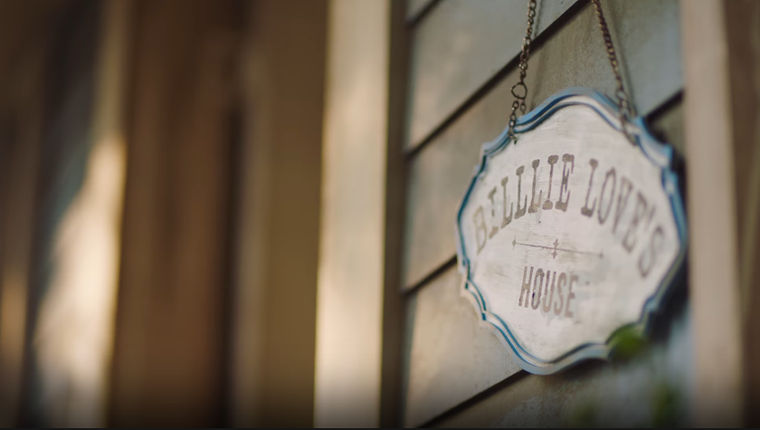
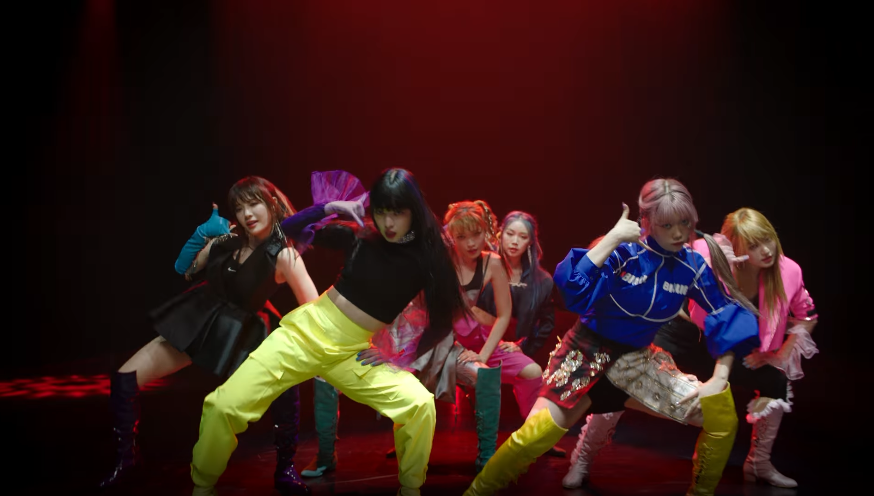
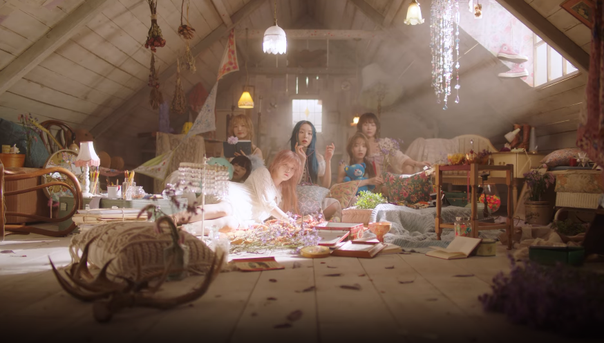

Kpop, Heteroglossia, and Billlie’s debut title track Ring x Ring
It’s August 2022 as I write this, and Mystic Story has announced that Billlie will be having a comeback at the end of the month and confirmed that it will be a sequel to their debut mini-album The Billage of Perception: Chapter One.
To me, that album remains a stunning debut. Assured. Mysterious. Sonically and lyrically interesting. Even the branding stands out—from the design of the packaging and the social images to the cinematic teasers.
Their February 2022 comeback The Collective Soul and Unconscious: Chapter One greatly increased their popularity and cemented their status as one of the most interesting fourth gen kpop projects, but it’s their debut I feel compelled to write about now that its’ sequel is coming. And that’s for one major reason: its’ use of heteroglossia.
What Is Heteroglossia?
Heteroglossia is term created by the literary critic and theorist Mikhail Bakthin to describe the way different bits of discourse find their ways into texts, especially the modern novel (modern here means modernist, meaning late 19th century and later).
In other words, cultural artifacts in the era of mass media often contain within them jargon, sayings, slang words, wording from advertisements, cultural references (from the common to the obscure), religious texts, popular song lyrics, and, yes, even memes, and all of these bits of discourse represent various specific discourse communities, types of language usage, and points of view (for more detail, see the wikipedia entry for heteroglossia and this article at the Internet Encyclopedia of Philosophy).
This isn’t just, say, an inside joke (although if you used the inside joke outside of your group of insiders it counts) or quoting your favorite films or television, but rather refers to the entirety of how we assemble how we speak and write these days.
So, for example, if you’ve ever used the wording of a meme while talking with others, especially, say, a group of people who aren’t your close friends of the same age, you’re engaging in heteroglossia. The same is true if you’ve ever made fun of bureaucratic, business/management, or political language by using it in the context of every day life or in reference to situations where it doesn’t belong.
Works of culture, especially novels, do this to better represent the world we live in where we encounter all these various specialized uses of language all the time.
And if you’re on Twitter or in a Discord server, you encounter a lot of it.
I’m using the term heteroglossia, specifically, instead of a more common one like multi-vocal or polyphony because I think it’s important to emphasize not just that there are multiple voices, but that these voices are drawing from/represent various sources.
The Use of Multiple Voices in Kpop
Popular music has long deployed multiple voices—from opera and vaudeville acts to the mid-20th century a cappella vocal group to doo-wop and early girl groups all the way through the boy and girl groups of the 1990s and early 2000s.
The advantage of such groups is not only could they produce beautiful, ear-catching harmonies and provide a more flexible palette of sounds for composers and producers to deploy in their music, but they also meant that the success of an act didn’t depend on one single artist.
Moreover, the presence of multiple singers meant that fans had a wider range of performers/personalities to become a fan of. If you don’t like Madonna or Elvis’s voice or personality, then you’re not going to be a fan of their music. If you’re meh on Joey but love Jordan, you’re probably going to still listen to New Kids on the Block.
The kpop industry took this format and intensified it.
I’m not going to rehearse the history of how boy and girl groups—both in western music and kpop—have been exploited (and, sadly, sometimes even abused). If you’re reading this, then you probably know about the problems in the industry, and I do want to nod to the fact that this system can be problematic.
However, it can also lead to spectacular results. The intense competition leads to exellence. Today’s kpop groups consist of incredibly talented and highly trained performers who can sing, dance, rap, emcee, model, be entertaining on variety shows, etc.
The competition in the industry also creates an often breathtaking speed of change and innovation. And, especially in the past five years, kpop has exploded out of its hip hop, R’n’B, and pop music roots to incorporate sounds and concepts from everywhere.
What that means is that pop groups can be even more ambitious. And with that comes an increase in the use of heteroglossia. It’s a technique that has always been present in popular music, but as more and more of the music created in kpop goes beyond the love song or bragging because I’m awesome/rich/gorgeous song and group concents become even more individuated and baroque, we’re seeing more bits of discourse and points of view come into the music itself and how it’s presented.
And, in my opinion, it finds its’ most overt (albeit somewhat strange), interesting expression in Billlie.
The Billlie Project as I Understand It

I’m not going to go heavy into the lore. If you want to dive into those deep waters, check out the resources @billlielore has put together.
Billlie’s lore is idiosyncratic, dense, elusive, and chock full of references to film and literature and concepts from science, psychology, and philosophy.
But for me it boils down to this:
Billlie is a project that focuses on the disappearance of a young woman and how that disappearance has impacted characters played by the seven members of Billlie, all of whom live in the same village/town, and have different memories and feelings about a young woman named Billlie Love who has gone missing. Billie love is either a specific young woman or the representation of all young women who go missing from society (either literally or emotionally/mentally), or a representation of anyone who gets lost as they try to move from adolescence into the adult world (or all three and more).
How that all manifests is weird and fascinating and involves dreams, multiple worlds, etc., but what it amounts to thematically is that Billlie’s project focuses on how adolescent women perceive and interact with the adult world and their (fading) childhood. It’s about coming of age while still trying to be yourself or at least a version of yourself that can cope with adulthood. It’s about how your relationships to your parents and friends change. It’s about who you can trust and who you can’t. It’s about how others view you and how you view yourself.
None of that is all that different from the themes that many kpop groups, especially girl groups, tackle in their music and visual aspects of their performance.
But the way it manifests in Billlie is stranger, darker, and, perhaps, a bit more complex than the standard girl crush/girl power approach.
Billlie and Heteroglossia

And one of the ways the Billlie executes on this strangeness and complexity is to embrace heteroglossia in ways that are amped up from the standard usage in kpop.
To put it simplistically, most pop songs deploy a point of view that is an ‘I’ speaking about themselves or to a ‘you’ (often a love or a crush or a rival). Or they’re an implied ‘I’ narrator talking about a ‘he’ or ‘she’. Sometimes it’s also a ‘we’. Occasionally we also get a storytelling point of view where the song is about a specific character. And sometimes we do get a reference to attitudes that exist outside the point of view of the narrator of the song—a “they say.”
In Billlie, speakers and bits of discourse get pulled in from multiple sources. The members of Billlie are presented as enmeshed in various discourse communities, and the lyrics references those communities.
The music itself is also prone to reference, such as the use of a snippet from Tchaikovsky’s “Dance of the Sugar Plum Fairy” in “everybody’s got a $ECRET.”
But even when the reference isn’t direct, the composition, instrument choices, and sound mix all emphasize this. Sounds gets sprinkled across the mix and tend to stand out. These sounds all go together, of course, but their music (except for the ballads) is not mixed into one cohesive presentation or a wall of sound and instead is presented as a collection of haunting/catchy/assertive melodies, very present bass and/or percussions lines, and a variety of ad-libs.
For example, the alarm sound in Ring x Ring is this insistent voice throughout the song. On the one hand, it’s just another jarring synth melody used in yet another kpop title track that’s influenced by experimental pop music.
On the other hand, it’s the driving meaning of the entire song, or as Haram, Tsuki (italics below), and Haruna (bolded below) sing in the pre-chorus:
It’s alright
No it’s not okay
Will be fine
You know it’s not
Ring ring a bell, ring ring a bell
Ring ring a bell, ring ring a bell.
There are at least three, possibly four or five, points of view just in this pre-chorus. And this heteroglossia repeats throughout the song often in a call-and-response format that’s not unusual for pop music, but comes across as strange (I know, I keep using that word) in Ring x Ring because it’s never quite clear how many people are speaking. Even if it’s the same member singing two different lines, because of the content of the lyrics and how some lines are a call, some a response, and some a commentary (especially in the ad-libs), you can’t even say for sure that each individual member is representing only one voice.
I call this heteroglossia, in particular, because it’s not just a few different points of view, but it also features different points of view within one ostensible point of view. Take these two lines from the first verse:
“They say there’s no marks”
“They say there are marks”
Both use “they say” and based on the story films, I interpret the “they” as the adults the members of Billlie encounter in those films. But notice how there are two sets of “they” who are referenced. And they disagree on whether billlie love left behind any traces when she disappeared or not.
It’s all rather confusing.
But, of course, that’s the point. The adult world is confusing when you’re an adolescent. Adults don’t always say what they mean. Or they don’t tell you things they should. Or they aren’t there for you (and your friends) when they should be.
The members of Billlie need to sound the alarm because they know things aren’t okay even if the adults in their world say they are.
Moreover,in "RingxRing" they invite the listener to “come find the missing”—or at least that’s how I interpret those lyrics.
Billlie is a group that invites interpretation and engagement.
There’s much more to say about heteroglossia in Billlie, and I may add to this analysis at some point. But I hope this makes for helpful context as we go into the sequel to their debut mini album.
Perhaps they’ll change things up on us, but I suspect there will be plenty of heteroglossia in it. It’s been there from the beginning, and, in my opinion, it’s an important part of understanding what Billlie is about.
In Dialogism: Bakhtin and his World, Michael Holquist reminds us that heteroglossia isn’t just about the different voices that are included in a cultural artifact. It’s also about the relations between them. He writes this about the novel and heteroglossia (especially in the context of intertextuality, that is, novels quoting others texts):
“The manifold strategies by which the novel demonstrates and deploys the complexities of relation—social, historical, personal, discursive, textual—are its essence. Heteroglossia is a plurality of relations, not just a cacophony of different voices” (89).
When Billlie released “Ring x Ring,” it was met with skepticism in some quarters because they experienced it as cacophony.
But it’s not cacophony. Not if you are willing to look at/listen to it closely.
It’s heteroglossia: a plurality of voices AND relationships.
And the more you experience Billlie’s work, the more you see—and appreciate—it.
